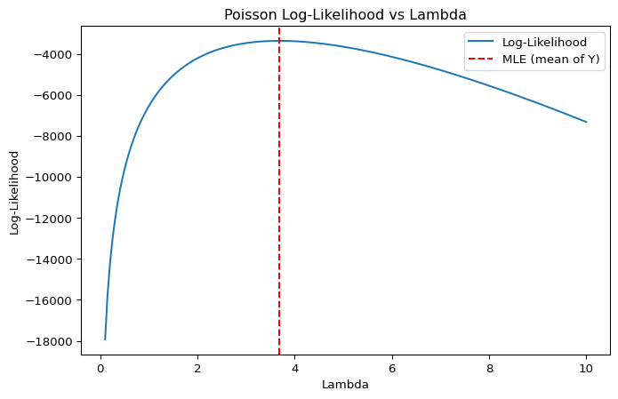

Karlan and List conducted a large-scale natural field experiment with over 50,000 previous donors to a liberal nonprofit in the U.S. Each donor was randomly assigned to receive one of several fundraising letters. The control group received a standard letter, while treatment groups received letters offering a matching grant, where a “concerned member” would match donations at 1:1, 2:1, or 3:1. These letters also varied in the maximum match amount ($25,000, $50,000, $100,000, or not stated) and the suggested donation amount, which was based on each donor’s past contributions.
This setup allowed the researchers to test whether lowering the “price” of giving through matching offers increased donations. They also studied how the effects varied by political affiliation (red vs. blue states), donor history, and demographic characteristics. The findings have practical value for fundraisers and offer new insights into altruism and public goods theory.
Data
Description
Variable Definitions
Variable
Description
treatment
Treatment
control
Control
ratio
Match ratio
ratio2
2:1 match ratio
ratio3
3:1 match ratio
size
Match threshold
size25
$25,000 match threshold
size50
$50,000 match threshold
size100
$100,000 match threshold
sizeno
Unstated match threshold
ask
Suggested donation amount
askd1
Suggested donation was highest previous contribution
askd2
Suggested donation was 1.25 x highest previous contribution
askd3
Suggested donation was 1.50 x highest previous contribution
ask1
Highest previous contribution (for suggestion)
ask2
1.25 x highest previous contribution (for suggestion)
ask3
1.50 x highest previous contribution (for suggestion)
amount
Dollars given
gave
Gave anything
amountchange
Change in amount given
hpa
Highest previous contribution
ltmedmra
Small prior donor: last gift was less than median $35
freq
Number of prior donations
years
Number of years since initial donation
year5
At least 5 years since initial donation
mrm2
Number of months since last donation
dormant
Already donated in 2005
female
Female
couple
Couple
state50one
State tag: 1 for one observation of each of 50 states; 0 otherwise
nonlit
Nonlitigation
cases
Court cases from state in 2004-5 in which organization was involved
statecnt
Percent of sample from state
stateresponse
Proportion of sample from the state who gave
stateresponset
Proportion of treated sample from the state who gave
stateresponsec
Proportion of control sample from the state who gave
stateresponsetminc
stateresponset - stateresponsec
perbush
State vote share for Bush
close25
State vote share for Bush between 47.5% and 52.5%
red0
Red state
blue0
Blue state
redcty
Red county
bluecty
Blue county
pwhite
Proportion white within zip code
pblack
Proportion black within zip code
page18_39
Proportion age 18-39 within zip code
ave_hh_sz
Average household size within zip code
median_hhincome
Median household income within zip code
powner
Proportion house owner within zip code
psch_atlstba
Proportion who finished college within zip code
pop_propurban
Proportion of population urban within zip code
::::
Balance Test
As an ad hoc test of the randomization mechanism, I provide a series of tests that compare aspects of the treatment and control groups to assess whether they are statistically significantly different from one another.
I tested four pre-treatment variables—mrm2 (months since last donation), years (years since initial donation), freq (number of prior donations), and female (binary gender indicator)—using two methods:
Two-sample t-tests
Simple linear regressions
import pandas as pdimport numpy as npimport statsmodels.api as smfrom scipy import statsdf = pd.read_stata('/Users/bibibingya/Downloads/emw_marketing_analytics/blog/project2/karlan_list_2007.dta')variables_to_test = ['mrm2', 'years', 'freq', 'female']results = []for var in variables_to_test: treat = df[df['treatment'] ==1][var].dropna() control = df[df['treatment'] ==0][var].dropna() diff = treat.mean() - control.mean() se = np.sqrt(treat.var(ddof=1)/len(treat) + control.var(ddof=1)/len(control)) t_manual = diff / se df_t =len(treat) +len(control) -2 p_manual =2* (1- stats.t.cdf(abs(t_manual), df_t)) reg_df = df[[var, 'treatment']].dropna() X = sm.add_constant(reg_df['treatment']) y = reg_df[var] model = sm.OLS(y, X).fit() results.append({"Variable": var,"Mean Difference": round(diff, 4),"T-stat (manual)": round(t_manual, 4),"P-value (manual)": round(p_manual, 4),"Coef (regression)": round(model.params['treatment'], 4),"T-stat (regression)": round(model.tvalues['treatment'], 4),"P-value (regression)": round(model.pvalues['treatment'], 4) })results_df = pd.DataFrame(results)print("Baseline Balance Table (Treatment vs Control):")display(results_df)
Baseline Balance Table (Treatment vs Control):
Variable
Mean Difference
T-stat (manual)
P-value (manual)
Coef (regression)
T-stat (regression)
P-value (regression)
0
mrm2
0.0137
0.1195
0.9049
0.0137
0.1195
0.9049
1
years
-0.0575
-1.0909
0.2753
-0.0575
-1.1030
0.2700
2
freq
-0.0120
-0.1108
0.9117
-0.0120
-0.1109
0.9117
3
female
-0.0075
-1.7535
0.0795
-0.0075
-1.7584
0.0787
Both approaches gave consistent results: no variable showed a statistically significant difference between groups at the 95% confidence level. These findings are consistent with Table 1 of the paper, where the means and standard deviations are visually similar across treatment and control conditions.
This reassures us that any observed differences in outcomes later on are unlikely to be driven by pre-existing differences, reinforcing the credibility of our causal claims.
Differences between Match Rates
To evaluate how the size of the match ratio influences donation behavior, I compared response rates across match conditions using both t-tests and logistic regression.
T-Test Results
I first conducted pairwise t-tests comparing the proportion of individuals who donated (gave) under different match ratios:
All p-values are greater than 0.05, indicating no statistically significant difference in response rates across the 1:1, 2:1, and 3:1 match ratios. These findings support the authors’ claim on page 8 that “larger match ratios had no additional impact.”
Logistic Regression
Next, I ran a logistic regression to model the probability of donating as a function of match ratio:
import statsmodels.formula.api as smfimport pandas as pddf = pd.read_stata('/Users/bibibingya/Downloads/emw_marketing_analytics/blog/project2/karlan_list_2007.dta')model = smf.logit("gave ~ C(ratio)", data=df).fit()print(model.summary())
While match ratios of 2:1 and 3:1 do increase the likelihood of donating compared to 1:1, the incremental gain from 2:1 to 3:1 is negligible. The t-tests show no significant differences in actual donation rates, and the regression shows nearly identical odds of giving.
Together, both statistical tests and model-based estimates support the conclusion in the original paper: > Increasing the match ratio beyond 2:1 does not meaningfully improve donor response.
Size of Charitable Contribution
Unconditional Analysis (All Participants)
I first analyzed whether individuals in the treatment group donated more on average than those in the control group, regardless of whether they donated.
Metric
Value
Mean (Control Group)
$0.813
Mean (Treatment Group)
$0.967
Mean Difference (Treatment - Control)
+$0.154
P-value (T-Test)
0.055
Treatment Coefficient (Regression)
0.1536 (p = 0.063)
Although the treatment group gave slightly more, the difference is only marginally insignificant at the 5% level. This suggests the treatment may have increased average giving slightly, but the evidence is not conclusive. Since treatment was randomly assigned, this result can be interpreted as the causal effect of the treatment on the average donation amount.
Conditional Analysis (Donors Only)
Next, I restricted the sample to only those who donated and repeated the analysis to evaluate the treatment’s effect on donation size among givers.
Metric
Value
Mean (Control Group)
$45.54
Mean (Treatment Group)
$43.87
Mean Difference (Treatment - Control)
-$1.67
P-value (T-Test)
0.599
Treatment Coefficient (Regression)
−1.668 (p = 0.561)
The treatment group gave slightly less, but the difference is not statistically significant. There is no causal interpretation. Since we’re conditioning on a post-treatment behavior (having donated), this breaks randomization and introduces selection bias. Therefore, this result is descriptive only, not causal.
As a reminder of how the t-statistic “works,” in this section I use simulation to demonstrate the Law of Large Numbers and the Central Limit Theorem.
Suppose the true distribution of respondents who do not get a charitable donation match is Bernoulli with probability p=0.018 that a donation is made.
Further suppose that the true distribution of respondents who do get a charitable donation match of any size is Bernoulli with probability p=0.022 that a donation is made.
Law of Large Numbers
To illustrate the Law of Large Numbers (LLN), I simulated donation behavior using binary outcomes based on the actual probabilities observed in the experiment:
Control group: Bernoulli(p = 0.018)
Treatment group: Bernoulli(p = 0.022)
I drew:
100,000 values from the control distribution
10,000 values from the treatment distribution
Then, I matched each of the 10,000 treatment draws with a randomly selected control draw and computed their difference. This resulted in a vector of 10,000 differences. The plot below shows the cumulative average of these differences across simulations:
import numpy as npimport matplotlib.pyplot as pltnp.random.seed(42)control_draws = np.random.binomial(1, 0.018, 100000)treatment_draws = np.random.binomial(1, 0.022, 10000)control_sample = np.random.choice(control_draws, size=10000, replace=False)differences = treatment_draws - control_samplecumulative_avg = np.cumsum(differences) / np.arange(1, len(differences) +1)plt.figure(figsize=(10, 5))plt.plot(cumulative_avg, color="blue", linewidth=1)plt.axhline(y=0.004, color='red', linestyle='--', label='True Difference (0.022 - 0.018)')plt.title("Cumulative Average of Differences: Treatment vs. Control")plt.xlabel("Number of Simulations")plt.ylabel("Cumulative Average Difference")plt.legend()plt.grid(True)

This plot clearly demonstrates the Law of Large Numbers in action, showing that as the number of samples increases, the cumulative average of the differences steadily converges toward the true population mean. Despite early fluctuations due to sampling noise, the average stabilizes with more observations, illustrating how even noisy individual data can produce accurate and reliable estimates of treatment effects when the sample size is sufficiently large.